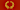

Kristallhöhle Kobelwald
Kobelwald Crystal Cave
Useful Information
| Location: |
Kristallhöhle Kobelwald, 9463 Oberriet.
In the town Oberrieth, St. Gallen. By car from Oberrieth to Kobelwald, at the crossroad do not turn left into Kobelwald but go straight ahead on a forest road towards Kobelwies and Montlinger Schwamm. From the car park at the dancing ground a few minutes walk. Alternative: from Kobelwald marketplace by foot 20 min. walk. ( 47.3228468, 9.5342219) |
| Open: |
Easter to mid-JUL Sun, Hol 11-17. Mid-JUL to mid-AUG daily 11-17. Mid-AUG to OCT Sun, Hol 11-17. [2023] |
| Fee: |
Adults CHF 10, Children (6-14) CHF 5. Groups (16+): Adults CHF 9, Children (6-14) CHF 4. [2023] |
| Classification: |
 Karst Cave
Geode Karst Cave
Geode
|
| Light: |
 Incandescent Incandescent
|
| Dimension: | L=665 m, VR=91 m, A=630 m asl, T=8.5 °C. |
| Guided tours: | L=256 m. |
| Photography: | allowed |
| Accessibility: | no |
| Bibliography: |
H. Bächler (1937):
In der Kristallhöhle Kobelwald,
St.Galler Jahresmappe.

Peter Beutler (2014): Kristallhöhle, 2014, Emons Verlag GmbH, ISBN 978-3-86358-581-5.
Peter Kürsteiner, Hans Stünzi, Marco Filipponi (2004): Die Kristallhöhle Kobelwald Verlag: Verkehrsverein Kobelwald, 9463 Oberriet, Tel. 071 761 19 77. ISBN 3-9521425-0-6. Format 23.5 x 24.5 cm, 120 Seiten, 136 Abbildungen und Illustrationen, ausklappbarer Höhlenplan, Fadenheftung, Hardcover mit Schutzumschlag, Preis SFR 20.
J. J. Scheuchzer (1702): Specimen Lithographiae Helvetiae curiosae David Gessner, Zürich.  J. J. Scheuchzer (1706): Beschreibung der Naturgeschichten des Schweizerlandes J.J. Scheuchzer, Zürich.
J. J. Scheuchzer (1746): Natur-Geschichte des Schweitzerlandes David Gessner, Zürich.
|
| Address: |
Verkehrsverein Kobelwald, Freienbach, CH-9463 Oberriet, Tel: +41-71-761-1977.
E-mail: |
| As far as we know this information was accurate when it was published (see years in brackets), but may have changed since then. Please check rates and details directly with the companies in question if you need more recent info. |
|
History
| 1682 | discovered by a hunter. |
| 1702 | first written mention by the Zurich scholar Johann Jacob Scheuchzer. |
| 1935 | developed and opened as a show cave. |
| 1987 | crystals and dripstones cleaned. |
| 1999-2002 | resurveyed by the Arbeitsgemeinschaft für Speläologie Regensdorf (Working Group for Speleology Regensdorf). |
| 2001 | massive renovation of the cave. |
| 2002 | reopened with new entrance building, an exhibition, and educational signs. |
Description


When the Kristallhöhle Kobelwald (Kobelwald Crystal Cave) was discovered by a hunter in 1682, it was filled with calcite crystals, hence the name. It was mentioned in literature early on, for the first time in 1702 by the Zurich scholar Johann Jakob Scheuchzer. In his "Specimen Lithographiae Helvetiae curiosae" (1702), Scheuchzer describes the calcite of the Kobelwald crystal cave, which he calls "Selenites rhomboidalis", and reproduces three copper engravings of such crystals. Scheuchzer had received the calcites from the priest Johann Henricus Faesius from Altstätten. He mentions the cave several times, even describes the narrow entrance and the necessity to crawl, but only states that this was the way how Faesius entered the cave. He probably never visited the cave himself.
The cave was mentioned numerous times in literature and was already listed as a mineral site on the oldest mineralogical map of Switzerland. The "Carte mineralogique de la Suisse" (Mineral map of Switzerland) drawn by the French geographer Philippe Buache dates from 1752. The minerals were mined and sold during the next centuries, and so the cave today contains just a small residual of crystals and some dripstones. It is not really known what happened to the crystals, or the reason why they were mined. Possible use is glas for religious pictures, scientific use, or production of medicine. Obviously a medicine produced of calcite would do no harm, but would also cure nothing except probably calcium insufficiency. Later, at the time of World War I, the calcite in the front area of the crystal cave was mined in huge amounts and then processed into cleaning agents. For this purpose, the calcite was ground very finely and used as a scouring agent.
Fortunately only the first 60 m of the cave were known at that time. In the early 1930s the photographer Max Burkardt from Arbon intended to capture the crystal cave in pictures. He noted with regret that it appeared to have been plundered. When Jakob Gyr, a natural healer in Gais and member of his party, looked more closely under the foot-thick layers of clay, he revealed large "Kristalldrusen" (geodes), one of which was 25 m² in size. The existing geodes were cleaned. On this occasion, an old hunter from Kobelwald told him that about 65 years ago he had once passed through a very narrow crevice at the supposed end of the cave into a passage leading even further into the Chienberg, where the stream had been dammed to form a lake about 60 m long. This crevice was already mentioned by Walser (1740) and is today called Walserspalte. At the beginning of October 1934, at the instigation of Jakob Gyr, an attempt was made to explore the cave stream behind this crevice. They were not willing to crawl through the narrow crack, so a 3 m long tunnel was blasted through. They reached a 1 m wide and 2 m high passage with water on the floor, which vanished in a swallow hole to reappear further down to the entrance. Another blasting allowed the explorers to advance about 200 m into the cave at that time. As a result of the new discoveries in the cave, the cave entrance was locked by a gate to prevent the vandalism of the crystals. Also, the cave was made accessible in 1934 and opened as a show cave in 1935. The main change was a new canal which is also capable of discharging maximum amounts of water to the outside. Beneath the gate at the entrance, after 128 m at the end of the developed part, another iron gate was installed, denying unrestricted access to the parts of the cave further back.
The show cave was renovated twice. The first time was in 1987, after the cave was transferred to the municipality, which invested some money into modernization. They cleaned the walls and ceiling in the entrance section of the cave passage with a high-pressure device. These were completely covered in soot, as the first cave visitors entered the cave interior exclusively with torches. The lighting and the stairs and walkways were also renewed.
In 1999 the Arbeitsgemeinschaft für Speläologie Regensdorf (Working Group for Speleology Regensdorf) started a resurvey of the cave. During winter 2001/2002 the cave was renovated, the visitor platform between the cave guide cabin and the cave entrance was widened and roofed over. The trails around the cave were improved and a showcase with exhibits from the cave and an educational sign was installed. In the First Hall, the floor was lowered by about 1 m by removing the entire loose sediments. On the floor of the cave as well as at the foot of the right wall, wonderful sections with numerous beautiful calcite crystals were revealed. In the left part of the floor there is now an artificially dammed lake, which is crossed on a newly constructed footbridge.
The crystals are very big, up to 30 cm long, and they were cut into a typical form which is locally called Doppelspat (double spar). This rhombohedral form of calcite does rarely occur naturally, it is a result of the cleaving process. The name double spar is a description of a typical optical effect of this material: the light is double refracted and so anything is seen twice through the crystal.
The natural trigonal and scalenohedral crystals found in the cave were not formed during the karstification process. They were not a result of calcite deposition after the cave was formed. Their size, crystal structure, and chemistry differs from speleothems. The crystals were formed much deeper, under higher pressure and temperature, and are much older than the cave. During the orogeny of the Alps the limestone was moved by tectonic forces, clefts formed, which were filled by calcite crystals. The material originated from the rock around, the transport was done by hydrothermal convection. Much later the rock with the sealed cleft was uplifted and karstified. The cave was formed along weaknesses in the rock which followed the vein of calcite crystals. Crystals which were covered by cave mud and thus protected from being destroyed by the corrosive cave water. Some parts of the crystals were not covered by mud, they look grey or were dissolved.
The cave has normal dripstones, stalactites and stalagmites, but they are not very special. On formation is quite interesting though, a so-called false floor. The cave was filled with sediments, mostly clay, and a stalagmite surrounded by a plate of flowstone formed on the clay. Then the clay was removed, washed out by the cave river, and the flowstone is now in the air, without foundation, held by the two ends which are connected to the walls, and a stalagmite which has formed a column and is thus connected to the ceiling.
The main passage of the cave is 367 m long, and the first 128 m are developed with trails and electric light. The passage has a small cave river which runs along the tour path. The cave is mostly narrow, and sometimes rather low. Helmets are provided at the entrance, but the use is voluntary. It is a good idea to wear the helmets, but good shoes are recommended even more. There are two spots in the cave, where the path is extremely close to the cave river, and the chance to get wet shoes is rather high, especially after rainfalls. So water-resistant walking boots are much recommended. While the trails are quite modern and comfortable, there are some sections which are special. One section has a staircase with half steps, anothe staircase consists of round steps in the middle of the river without railing. A little surefootedness is required. If you bring children you should keep this in mind.
The Crystal Cave is located at the foot of the Alpenstein, under the patrimony of Oberriet and St Gall. Whilst repairing and cleaning the cave in 1987, wonderful crystal treasures were found. With the help of a guide, visitors can discover a fascinating underground world of crystals, stalagmites and hidden streams. A well-indicated path and subtle lighting makes it an unforgettable visit. The cave can be reached either by car or by a 15-minute walk from Kobelwald.
Text by Tony Oldham (JUN-2001). With kind permission.
Near the show cave, below the cave entrance, in a steep hillside was the place where 1982 the bodies of two murdered girls were found. The two girls from Goldach, Brigitte Meier (17) and Karin Gattiker (15) were discovered in a small cave and under a stone slab. They went on a bike tour through the Appenzell countryside and vanished on 31-JUL-1982. The bodies were mostly clothed, there were no indications of a sexual offence. It was obvious that the perpetrator had to be familiar with the area. Over the years, three cave guides, an architect from Kobelwald and a convicted sex offender living in the area were suspected of the murder. However, the crime could not be proven against any of them. This is one of the most spectacular and mysterious murder cases in Switzerland and remains unsolved to this day. As capital crimes become statute-barred in Switzerland after 30 years, it is officially shelved. Due to its location it is known as Kristallhöhlenmord von Oberriet SG (Crystal Cave Murder of Oberriet SG).
Switzerland is quite famous for its minerals, there is even an occupational title, Strahler, for people who live from collecting and selling minerals. The Strahl (ray) is the shiny mineral, which looks like a petrified ray of light. Beneath the crystal cave there are numerous mineral museums in the vicinity, which show exhibitions of local minerals.
- See also
 Caves With a View
Caves With a View Search Google for "Kristallhöhle Kobelwald"
Search Google for "Kristallhöhle Kobelwald" Google Earth Placemark
Google Earth Placemark OpenStreetMap
OpenStreetMap Kristallhöhle Kobelwald - Wikipedia (visited: 07-JUN-2023)
Kristallhöhle Kobelwald - Wikipedia (visited: 07-JUN-2023) Kristallhöhle Kobelwald, official website (visited: 07-JUN-2023)
Kristallhöhle Kobelwald, official website (visited: 07-JUN-2023)- KRISTALLHÖHLE KOBELWALD (visited: 07-JUN-2023)
- Kristallhöhle Kobelwald (visited: 07-JUN-2023)
- Die Kristallhöhle Kobelwald - Schauhöhle im St. Galler Rheintal (visited: 07-JUN-2023)
- Die Kristallhöhle Kobelwald, Sankt Galler-Rheintal, CH (visited: 07-JUN-2023)
 Index
Index Hierarchical
Hierarchical Countries
Countries Maps
Maps Search
Search{kind=link}
{kind=link}
{kind=link}
{kind=link}
{kind=link}
{kind=link}
{kind=link}